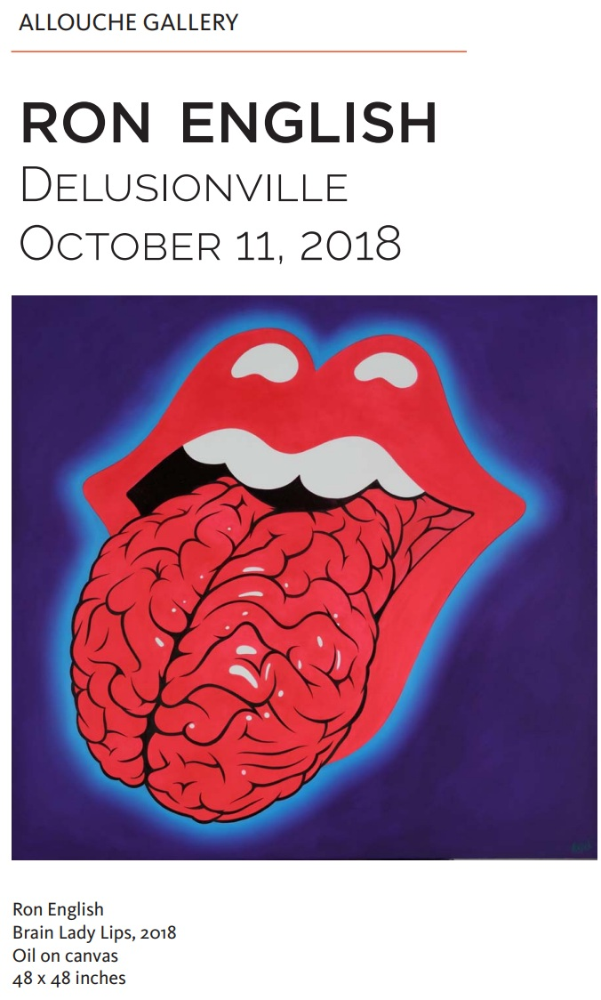

Exhibitions
Delusionville, Allouche Gallery, New York, New York, US, October 11–November 25, 2018.
Literature
Ron English, Original Grin: The Art of Ron English (Paris: Cernunnos, 2019), p. 311. ISBN 978-2374950938.
Notes
This work appears in the online PDF catalogue for Ron English: Delusionville, available here, accessed April 12, 2026.
This composition was later reproduced by the artist as a limited-edition print in the Vinyl Chord: A Revolutionary Record Store series.
Ancillary Documentation
